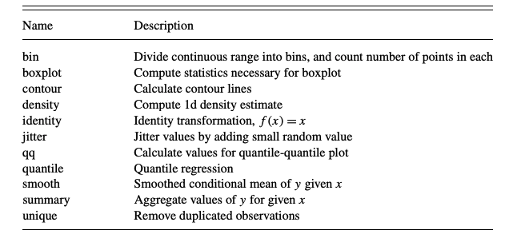

Gramática de los gráficos
Una apreciación a un problema menor
El diseño de gráficos estadísticos tiene dos componentes principales: i) el arte de saber transmitir la información y la idea y ii) el procesamiento que está detras de ello. Pero cuando se desagrega de manera eficiente, los highlight tienden a no verse de la manera apropiada y es de aceptar que para este problema hay varias soluciones practicas, pero en terminos de eficiencia de código puede que no 👨🏻 💻.
Y es por lo anterior que se usan funciones auxiliares para poder desarrollar de manera apropiada este tipo de gráficos desagregados (facetting). No sobra recordar que The Grammar of Graphics(1980) explicaba que las etapas del desarrollo de los gráficos consiste en :
Generar reglas que deriven en la explicación de un problema : Barplots, Points, etc.
Desarrollar la matemática que está detrás de la simbología.
Entender y saber relacionar los componentes que se necesitan.
Pero ante lo anterior surgen una serie de preguntas ¿ Qué es un gráfico?, ¿ Qué debe describir un gráfico?.
Una de las definiciones que más me gusta es la da Hadley Wickham, en donde describe a un gráfico como un conector de ideas a través de variables. Con respecto a lo que debe describir un gráfico se puede decir de manera corta como: Hallazgos y conclusiones.

Las leyes de la gramática de los gráficos
En su ensayo A Layered Grammar of Graphics Wickham define los niveles (las leyes) que debe cumplir todo gráfico
Datos : Sobre los cuales se desarrollaran operaciones matemáticas que deriven en la conexión de variables y con ello de entendimiento.
Elementos : La geometría y la posición que tendrá la data.
Escala : La unidad de medida unificada por coordenada
Coordenadas : El mapa que sigue el gráfico.
Las transformaciones estadísticas que van dentro de los gráficos se pueden definir de la siguiente manera:
 Tomado de :A LAYERED GRAMMAR OF GRAPHICS
Facetting
Esta condición es la que permite separar los gráficos por alguna de las variables que permita desagregación y precisión.
Un ejemplo
Se explora un poco la data
| franchise | original_media | year_created | creators | owners | categories | total_revenue | most_profitable |
|---|---|---|---|---|---|---|---|
| Anpanman | Manga | 1973 | Takashi Yanase | Froebel-kan | 2 | 60.092 | Merchandise, Licensing & Retail |
| Batman | Comic book | 1939 | Bob Kane Bill Finger | DC Entertainment (AT&T) | 4 | 25.040 | Merchandise, Licensing & Retail |
| Barbie | Animated film | 1987 | Ruth Handler | Mattel | 3 | 23.005 | Merchandise, Licensing & Retail |
| Avengers | Comic book | 1963 | Stan Lee Jack Kirby | Marvel Entertainment (The Walt Disney Company) | 4 | 12.590 | Box Office |
| Angry Birds | Video game | 2009 | Jaakko Iisalo | Rovio | 4 | 8.480 | Merchandise, Licensing & Retail |
| Ben 10 | Animated series | 2005 | Man of Action Studios | Cartoon Network (AT&T) | 1 | 7.000 | Merchandise, Licensing & Retail |
| A Song of Ice and Fire / Game of Thrones | Novel | 1996 | George R. R. Martin | Random House WarnerMedia (AT&T) | 5 | 5.313 | TV |
| Aladdin | Animated film | 1992 | Walt Disney Animation Hanna Diyab | The Walt Disney Company (franchise) Sega Sammy Holdings (games/pachinko) | 5 | 4.907 | Video Games/Games |
| Assassin’s Creed | Video game | 2007 | Patrice Désilets Jade Raymond Corey May | Ubisoft | 3 | 4.253 | Video Games/Games |
| Beyblade | Manga | 1999 | Takao Aoki | Shogakukan (Hitotsubashi Group) | 2 | 4.009 | Merchandise, Licensing & Retail |
Respetando las reglas de los gráficos se desarrolla un modelo matemático sencillo para el ejemplo
| original_media | n |
|---|---|
| Video game | 27 |
| Manga | 17 |
| Animated film | 8 |
| Animated series | 8 |
| Novel | 8 |
| Television series | 7 |
| Comic book | 6 |
| Film | 5 |
| Animated cartoon | 3 |
| Anime | 3 |
| Book | 2 |
| Digital pet | 2 |
| Greeting card | 2 |
| Cartoon | 1 |
| Cartoon character | 1 |
| Comic strip | 1 |
| Musical theatre | 1 |
| Visual novel | 1 |
Paso seguido se estudia el promedio del revenue a través de la franquicia.
Avg_fraq<-franchises%>%
group_by(franchise,original_media)%>%
summarize(Avg_Revenue = mean(total_revenue))%>%
ungroup()%>%
mutate(franchise = fct_reorder(franchise,Avg_Revenue))
Avg_fraq%>%
knitr::kable(format = 'html',caption = 'Relación de la franquicia por el promedio de los ingresos')| franchise | original_media | Avg_Revenue |
|---|---|---|
| A Song of Ice and Fire / Game of Thrones | Novel | 5.313 |
| Aladdin | Animated film | 4.907 |
| Angry Birds | Video game | 8.480 |
| Anpanman | Manga | 60.092 |
| Assassin’s Creed | Video game | 4.253 |
| Avengers | Comic book | 12.590 |
| Barbie | Animated film | 23.005 |
| Batman | Comic book | 25.040 |
| Ben 10 | Animated series | 7.000 |
| Beyblade | Manga | 4.009 |
| Bleach | Manga | 7.066 |
| Bob the Builder | Animated series | 5.000 |
| Call of Duty | Video game | 17.000 |
| Candy Crush Saga | Video game | 4.000 |
| Care Bears | Greeting card | 5.052 |
| Cars | Animated film | 21.654 |
| CrossFire | Video game | 10.000 |
| DC Extended Universe | Film | 6.204 |
| Despicable Me / Minions | Animated film | 6.686 |
| Detective Conan / Case Closed | Manga | 5.685 |
| Digimon | Digital pet | 5.968 |
| Disney Princess | Animated series | 44.042 |
| Dora the Explorer | Animated series | 15.250 |
| Doraemon | Manga | 6.000 |
| Dragon Ball | Manga | 21.825 |
| Dragon Quest | Video game | 11.465 |
| Dungeon Fighter Online | Video game | 10.000 |
| Fast & Furious | Film | 5.466 |
| Fate | Visual novel | 3.569 |
| Final Fantasy | Video game | 11.199 |
| Fist of the North Star | Manga | 20.468 |
| Friends | Television series | 4.130 |
| Frozen | Animated film | 10.473 |
| Gran Turismo | Video game | 4.000 |
| Grand Theft Auto | Video game | 9.000 |
| Gundam | Anime | 25.525 |
| Halo | Video game | 6.000 |
| Hello Kitty | Cartoon character | 80.026 |
| Hunter × Hunter | Manga | 3.351 |
| Ice Age | Animated film | 3.000 |
| James Bond | Novel | 13.901 |
| JoJo’s Bizarre Adventure | Manga | 8.860 |
| Jurassic Park | Novel | 7.678 |
| KochiKame | Manga | 15.817 |
| Kumamon | Cartoon | 4.065 |
| League of Legends | Video game | 8.000 |
| Looney Tunes | Animated cartoon | 13.299 |
| Mario | Video game | 35.021 |
| Marvel Cinematic Universe | Film | 31.000 |
| Mickey Mouse & Friends | Animated cartoon | 69.737 |
| Middle-earth / Lord of the Rings | Novel | 18.722 |
| Minecraft | Video game | 5.000 |
| Mission: Impossible | Television series | 3.146 |
| Monster Strike | Video game | 7.010 |
| Mortal Kombat | Video game | 1.173 |
| My Little Pony | Animated cartoon | 4.071 |
| Naruto | Manga | 8.854 |
| Neon Genesis Evangelion | Anime | 15.237 |
| One Piece | Manga | 17.433 |
| Pac-Man | Video game | 15.032 |
| PAW Patrol | Animated series | 7.000 |
| Peanuts | Comic strip | 17.285 |
| Pirates of the Caribbean | Film | 6.000 |
| Pokémon | Video game | 90.863 |
| Pretty Cure / Glitter Force | Anime | 7.228 |
| Puzzle & Dragons | Video game | 7.000 |
| Resident Evil | Video game | 4.688 |
| Rurouni Kenshin / Samurai X | Manga | 3.570 |
| Sailor Moon | Manga | 14.319 |
| Sesame Street / The Muppets | Television series | 7.646 |
| Shōnen Jump / Jump Comics | Manga | 33.217 |
| Shrek | Novel | 4.275 |
| Slam Dunk | Manga | 4.658 |
| Sonic the Hedgehog | Video game | 7.007 |
| Space Invaders | Video game | 13.000 |
| Spider-Man | Comic book | 24.550 |
| SpongeBob SquarePants | Animated series | 13.465 |
| Star Trek | Television series | 9.326 |
| Star Wars | Film | 63.004 |
| Strawberry Shortcake | Greeting card | 4.002 |
| Street Fighter | Video game | 11.235 |
| Super Sentai / Power Rangers | Television series | 29.233 |
| Superman | Comic book | 13.152 |
| Tamagotchi | Digital pet | 5.160 |
| Teenage Mutant Ninja Turtles | Comic book | 12.735 |
| The Big Bang Theory | Television series | 4.000 |
| The Hunger Games | Novel | 2.475 |
| The Lion King | Animated film | 12.987 |
| The Phantom of the Opera | Musical theatre | 6.155 |
| The Simpsons | Animated series | 13.527 |
| Thomas & Friends | Book | 8.020 |
| Toy Story | Animated film | 19.540 |
| Transformers | Animated series | 15.740 |
| Twilight | Novel | 5.388 |
| Ultraman | Television series | 11.242 |
| Warcraft | Video game | 10.451 |
| Westward Journey | Video game | 6.000 |
| Wii series | Video game | 14.000 |
| Winnie the Pooh | Book | 74.519 |
| Wizarding World / Harry Potter | Novel | 28.108 |
| X-Men | Comic book | 7.033 |
| Yo-kai Watch | Video game | 4.023 |
| Yu-Gi-Oh! | Manga | 18.567 |
Paso seguido se desarrolla un gráfico con facetting en original_media
franq_sort<-franchises%>%
mutate(decade = (year_created%/% 10)*10)%>%
group_by(decade)%>%
count(original_media,sort = TRUE)%>%
ungroup()
franq_sort%>%
group_by(decade)%>%
top_n(10)%>%
ungroup()%>%
mutate(decade = as.factor(decade))%>%
ggplot(aes(original_media,n,fill=decade))+
geom_col(show.legend = FALSE)+
facet_wrap(~decade, scales = 'free_y')+
scale_y_continuous(expand = c(0,0)) +
coord_flip()## Selecting by n
Como se puede observar, no hay un ordenamiento claro y es por ello que se usará el paquete tidytext1, el cual permite a través de reorder_within solucionar el problema de cardinalidad.
franq_sort%>%
group_by(decade)%>%
top_n(10)%>%
ungroup()%>%
mutate(decade = as.factor(decade),
original_media = reorder_within(original_media,n,decade))%>%
ggplot(aes(original_media,n,fill=decade))+
geom_col(show.legend = FALSE)+
facet_wrap(~decade, scales = 'free_y')+
scale_x_reordered() +
scale_y_continuous(expand = c(0,0)) +
coord_flip()## Selecting by n
Y así con la función auxiliar, los gráficos quedan ordenados y computacionalmente el código es más eficiente.
Al desarrollar un análisis más eficiente combinando una pregunta de negocio o de contexto versus las leyes de la gramática de los gráficos. Una medidas poco robusta pero que se usará para este caso será el promedio, a través de el se intentará determinar a través de las decadas cuál es la franquicia que mejor revenue ha tenido.
franchises%>%
mutate(decade = (year_created%/% 10)*10)%>%
group_by(decade, original_media, franchise)%>%
summarize(Avg_revenue = mean(total_revenue))%>%
ungroup()%>%
mutate(franchise = fct_reorder(franchise,Avg_revenue))%>%
top_n(40)%>%
ggplot(aes(franchise,Avg_revenue, fill= original_media))+
geom_col(show.legend = TRUE)+
labs(title = "Relación de las franquicias en el tiempo", subtitle = "A través del valor promedio de sus ganancias", fill="")+
facet_wrap(~decade, scales = 'free')+
coord_flip()+
theme(legend.position=c(0.8,0.1), legend.direction = 'horizontal', legend.box = "vertical", legend.text = element_text(size = 3),
legend.title = element_text(size = 3), legend.key.size = unit(0.3,"cm"))
Y así el facetting cumple los sigiuentes objetivos:
- Ordenar por las fases que se piden ,
- Dar a entender una idea,
- Calcular y representar una idea.
Por último se evalua el nivel de volatilidad de los ingresos por cada una de las franquicias desde 1970, en donde el resultado es el siguiente.

Para finalizar quiero resaltar la importancia del tidytext para el diseño de gráficos, si desea conocer mayor bibliografía o conocer mejores practicas, recomiendo el blog de Cédric Scherer.